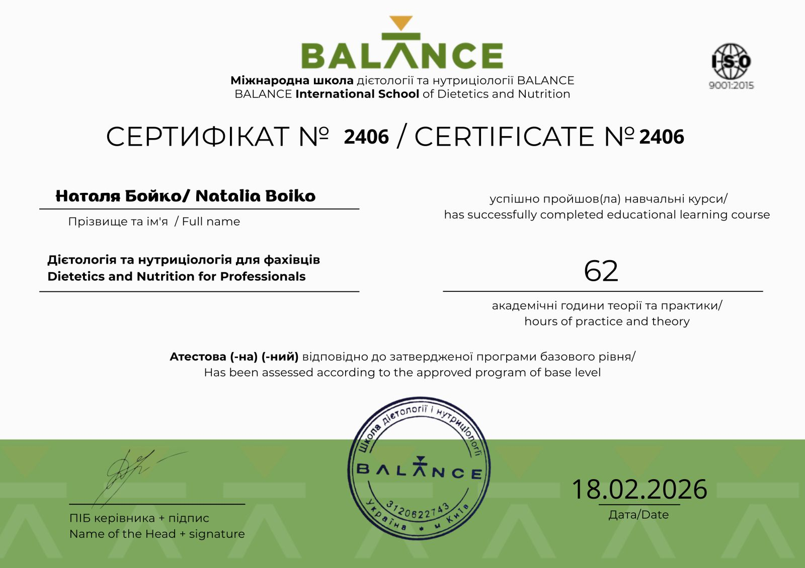

Аз съм Наталия — лекар, диетолог и нутриционист
Моето образование започна с медицината. По професия съм лекар, завърших Днепропетровския медицински институт. След това преминах стаж в Одеския медицински институт, катедра по вътрешни болести. Работих като участъков терапевт в поликлиника, а след това в Николаевската областна болница. Медицинският подход и погледът към организма като единна система остават основата на моята работа и днес.
Лекарската практика показа, че много оплаквания — за храносмилането, хормонални нарушения, самочувствие, тегло — се натрупват с години и са тясно свързани с храненето и начина на живот. Така интересът към тази тема прерасна в отделно направление на работа.
Получих образование в областта на диетологията и нутрициологията в BALANCE International School, потвърдено със сертификат по международния стандарт ISO 9001:2015. Днес помагам при дискомфорт в храносмилането, възпалителни процеси, хормонални промени и наднормено тегло — с опора на лекарския подход и индивидуален хранителен режим.
Моят личен интерес към психологията и базовото обучение в тази посока помагат да отчитам и емоционалната страна при изграждането на навици за хранене и начин на живот.
Често ме питат защо съм лекар, а не продължавам работа в сферата на официалната медицина. Мога да отговоря, че виждам своята мисия именно в предотвратяването и профилактиката на болестите, като навреме разпознавам и отстранявам техните причини, и в мотивирането на пациентите за ежедневна грижа за себе си и за своето здраве. В заключение искам да пожелая: «Нека храната стане вашето лекарство, преди лекарството да стане ваша храна».
Сертификати и образование
